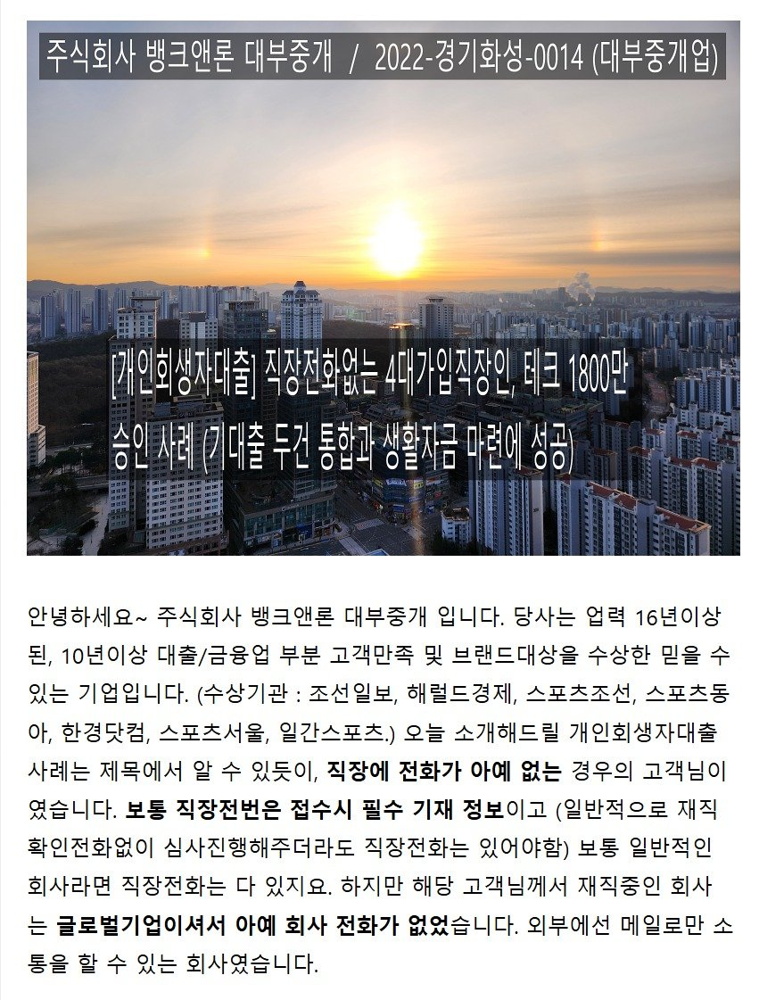
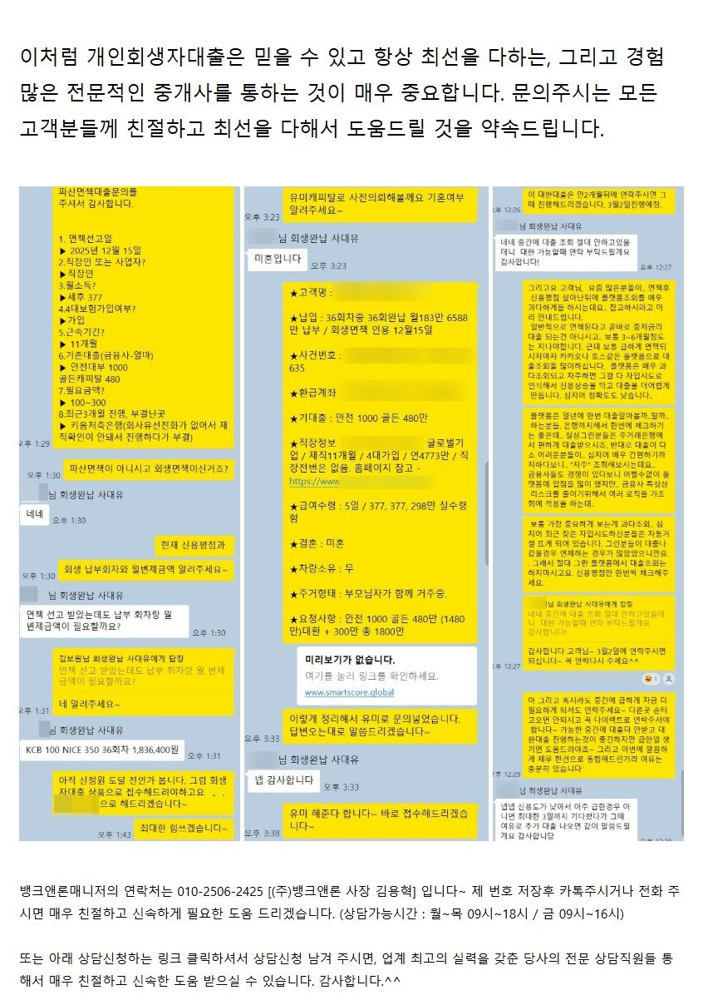
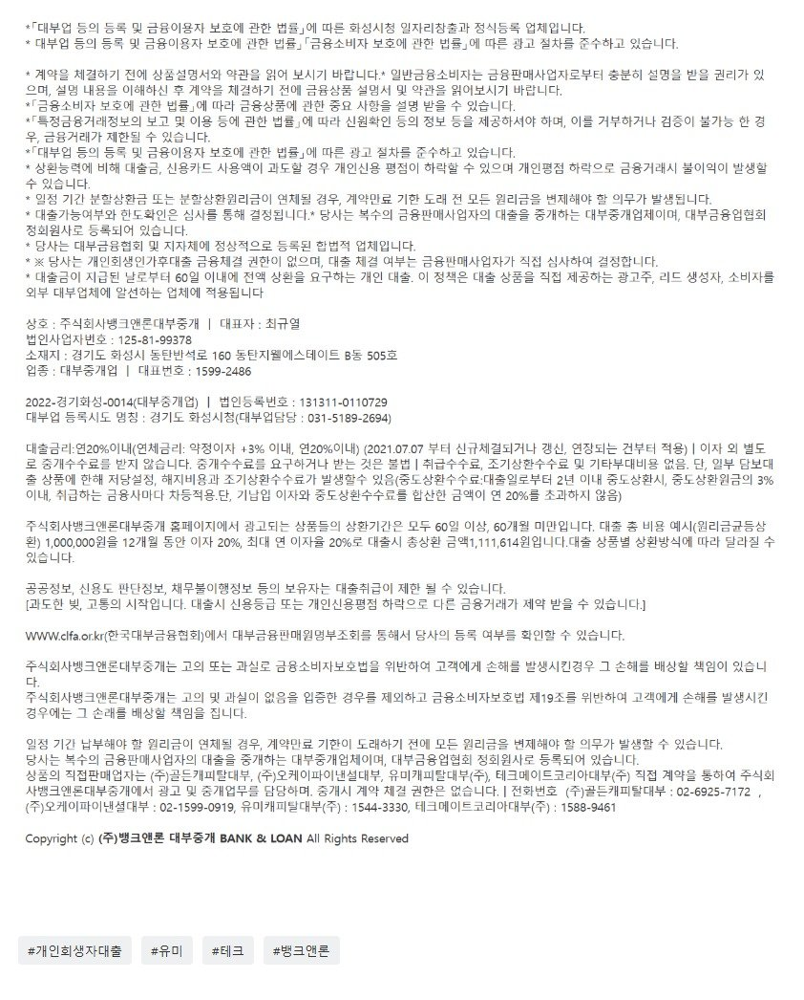

[개인회생자대출] 직장전화없는 4대가입직장인, 테크(유미) 1800만 승인사례(기대출 두건 통합과 생활자금마련에 성공)

그리고 고객님은 아래 캡쳐한 대화내용을 통해서도 아실 수 있지만 회생은 면책 되셨지만 아직 신정원 도달 이전이셔서 kcb 신용평점은 100점이셨고 기대출은 두건에 1480만원 사용중이셨습니다. 필요금액은 100~300만원으로 소액이셨습니다. 때문에 테크(유미캐피탈대부)로 개인회생자대출 사전의뢰(무서류) 해드렸고 1800만원 한건의 대출로 깔끔하게 채무통합과 생활자금 마련에 성공하실 수 있었습니다. 직장전화가 없어서 유선상 재직확인 못하는 부분은 재직증명서로 대체해서 진행해주었습니다. 그리도 여기서 그치면 뱅크앤론이 아니죠. 두세달뒤에 대환대출도 안내드렸습니다. 참고 - https://cafe.naver.com/cityman88/309305
원본 백업에 없거나 외부 접근이 제한된 이미지입니다.
[회생면책자대출필독] 면책직후 대부3건을 연금리13%로 채무통합에 성공한 사례!! (회생중이신분들도 꼭 보셔서 미리 준비하셔야 함!!!!)
안녕하세요~ 주식회사 뱅크앤론 대부중개 입니다. 당사는 업력 16년이상된, 10년이상 대출/금융업 부분 고객만족 및 브랜드대상을 수상한 믿을 수 있는 기업입니다. (수상기관 ...

뱅크앤론매니저의 연락처는 010-2506-2425 [(주)뱅크앤론 사장 김용혁] 입니다~ 제 번호 저장후 카톡주시거나 전화 주시면 매우 친절하고 신속하게 필요한 도움 드리겠습니다. (상담가능시간 : 월~목 09시~18시 / 금 09시~16시)
또는 아래 상담신청하는 링크 클릭하셔서 상담신청 남겨 주시면, 업계 최고의 실력을 갖춘 당사의 전문 상담직원들 통해서 매우 친절하고 신속한 도움 받으실 수 있습니다. 감사합니다.^^
상담신청 -> https://cafe.naver.com/cityman88/29497
[필독사례모음] 개인회생자대출 필독 매니저 사례 모음 (개인회생자대출 알아보시는분들 필독필독!!)
https://cafe.naver.com/cityman88/309800
원본 백업에 없거나 외부 접근이 제한된 이미지입니다.
[필독사례모음] 개인회생자대출 필독 매니저 사례 모음 (개인회생자대출 알아보시는분들 필독필독!!)
[개인회생자대출] 8월 회생면책자 kcb 250점, 기대출 7건인 고객님의 대출 두건으로 통합과 (2300만원 유미&테크 승인) 신용평점 회복 도움드린 사례 (면책자분들 특특...

https://cafe.naver.com/cityman88/309819